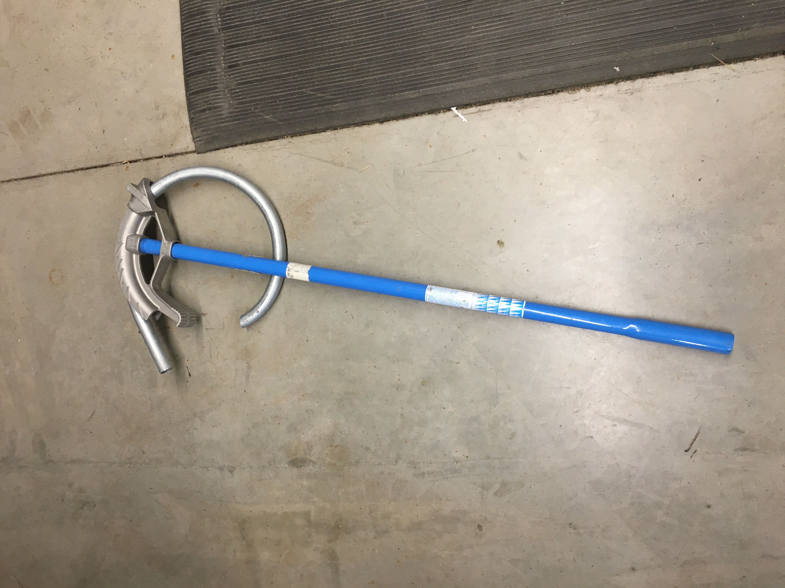
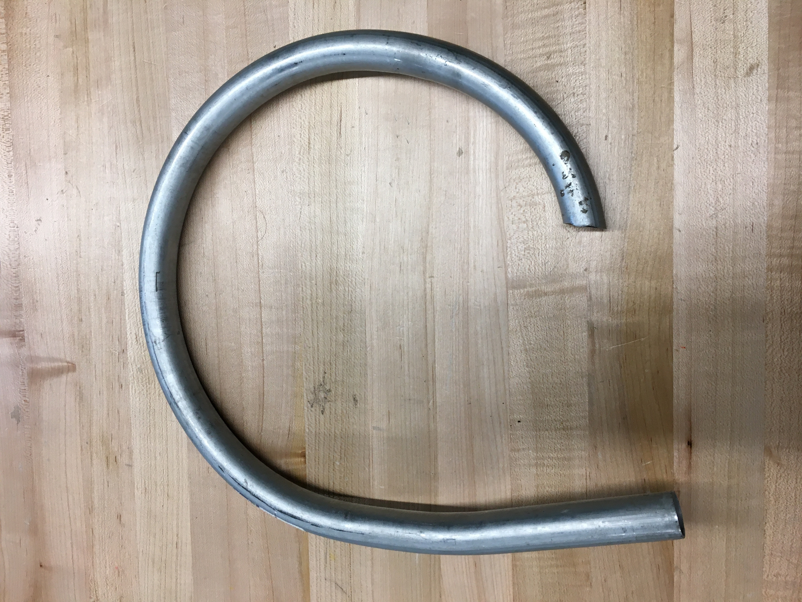
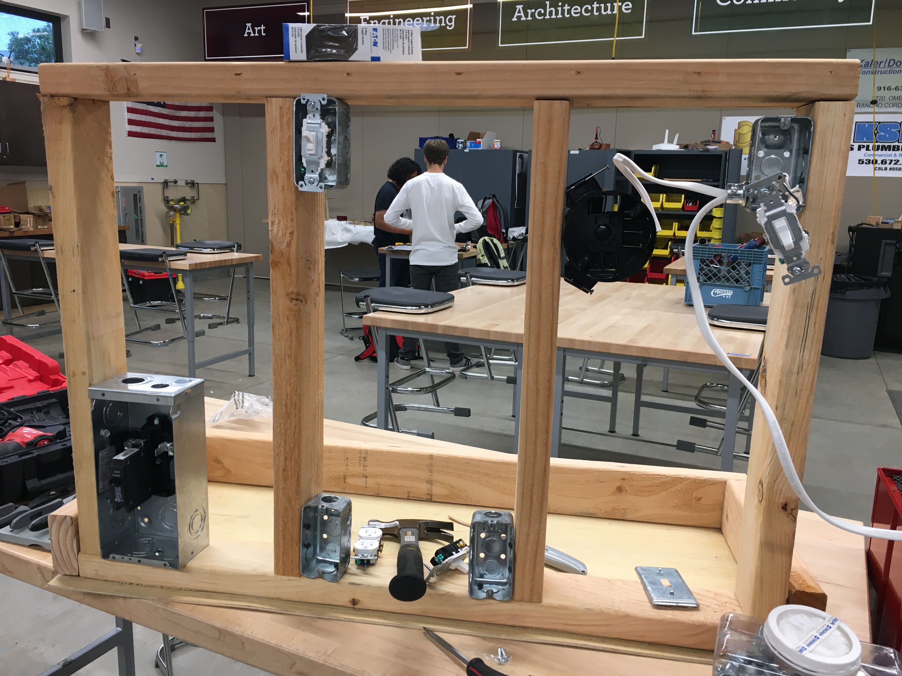
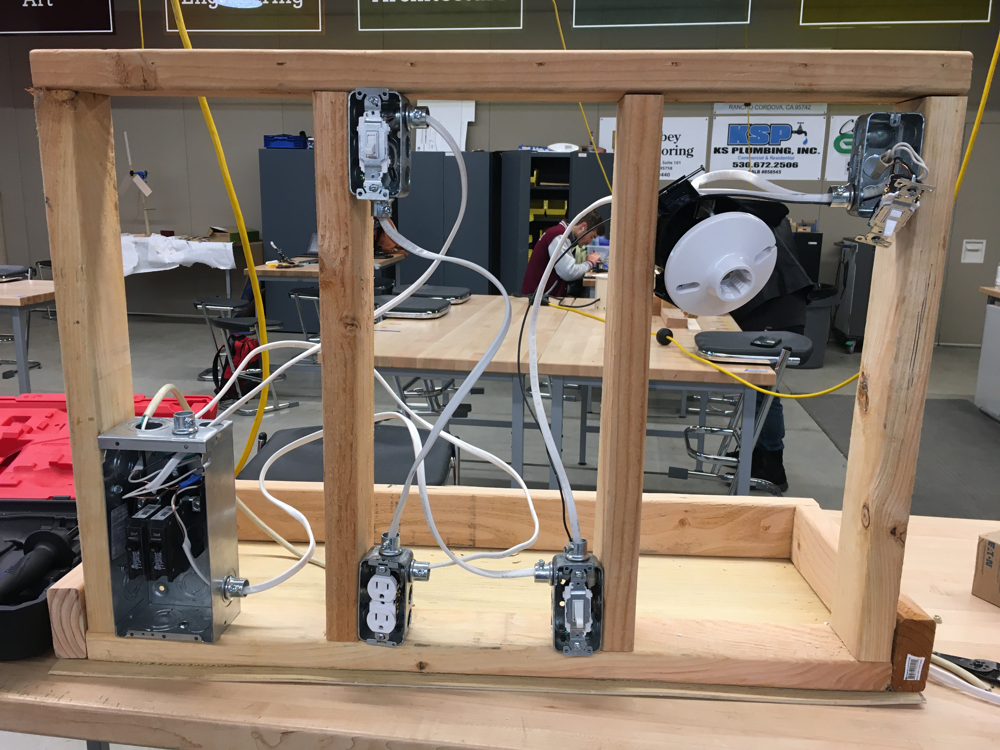
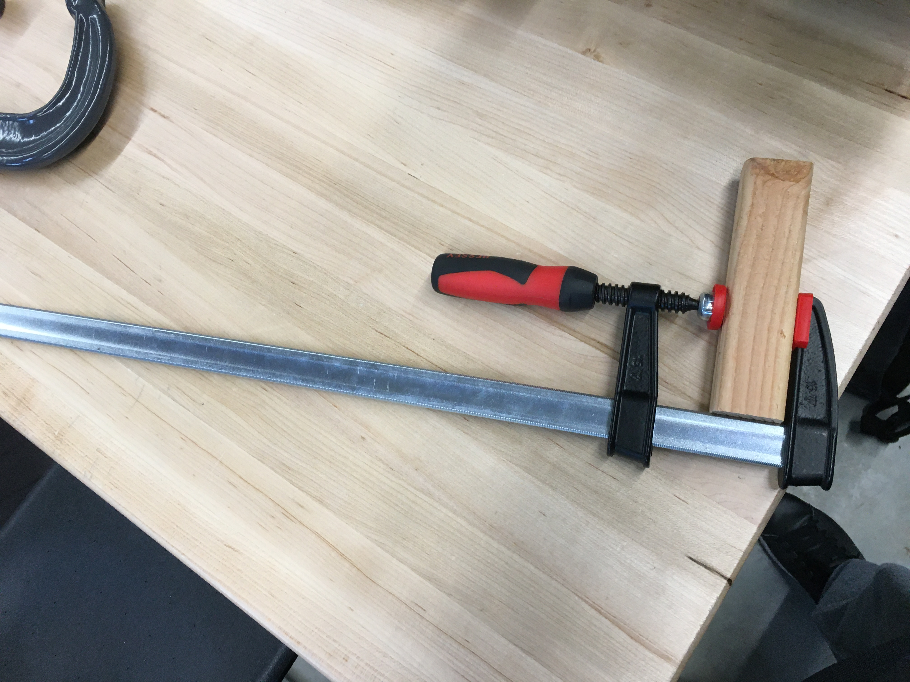

This was my highschool senior project.
The goal of this project is to create a training board for training future students.
Unfortunately, a lot of documentation has been lost since my highschool deleted my school account after graduating.
EMT is also commonly referred to as conduits. EMT are tubes that electricians feed wires through to protect them from the elements and to hold them in place on walls or ceilings. After all, exposed wires or dangling wires are a safety hazard. Hand conduit benders are used to bend the EMT so that they can efficiently route across different ceilings and walls.


Routing the wires in the circuit breaker was a challenge.
Additionally, screwing everything down in a stable way was a challenge.
The progress goes from left the right


Those are the only pictures I could find of this project after scrolling through my photo gallery. Here is a fun picture of a bar clamp and a fun video of a lathe that I played with.
